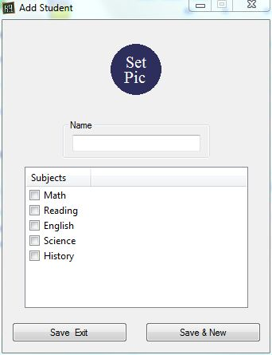
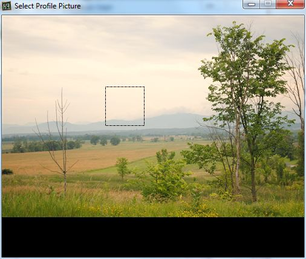
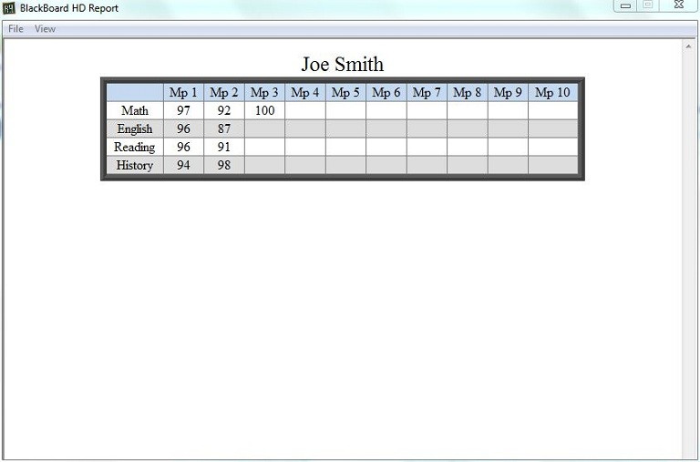

BlackBoard HD
Main Window

The above window is what you see when you open BlackBoard HD after you have several students entered. We will be using these sample students for the rest of the tour.
Profile Manager
Here is where the profiles are created.
You can create a new year by clicking New Year. Fill in the Test and Quiz sections in the Calculation Method groupbox. Next ajust your Grade Weights and any Letter Grade Values that you want different. Then add your subjects to the Subject Manager and click add student to add a student. You will be given your list of subjects to choose from. At any time you want to edit or delete a student or subject you can do so by right-clicking on them and selecting an option from the popup menu.
Add Student
This is relatively easy, enter the students name, select the subjects that you wish to use for this student. If you wish to you can set a profile picture by click on Set Profile Pic. If not a profile picture containing the students initial will be automatically generate. Details of how selecting a profile picture is done are below. When you have entered all the students data simply select Save & Exit or Save & New.
Select Profile Picture
First select a picture then use your mouse wheel to change the size of you selection box. Left clicking will save your selection.
Generate Report
You can toggle you view from Letter Grades to Number Grades in the view menu. And you can print from the File menu.
Generate Graph
You can print or export you graphs in the File menu.